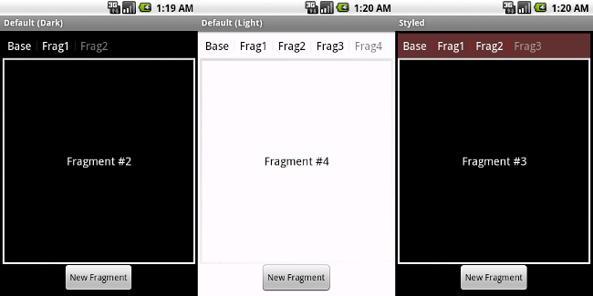

Introduction
Android library providing fragment bread crumbs to the Android Compatibility Library and ActionBarSherlock.
When using fragments it is not always obvious to the user that there are multiple fragments on the back stack. By implementing this widget you provide a clear indicator that there exists additional content which they can go back to through the back button or by pressing one of the titles.
There are two styles included by default in the library, one dark and one light. You can easily provide your own styling, however.

Download
Usage
-
Include the widget in your view. This should usually be placed directly above the container in which the associated fragments will be displayed.
<android.support.v4.app.FragmentBreadCrumbs android:id="@+id/breadcrumbs" android:layout_width="fill_parent" android:layout_height="40dp" /> -
In your
onCreatemethod, bind the widget to the activity.FragmentBreadCrumbs crumbs = (FragmentBreadCrumbs)findViewById(R.id.breadcrumbs); crumbs.setActivity(this);
-
Add the required style attributes to your theme.
<item name="hagDividerVertical">@drawable/hag__divider_dark</item> <item name="hagSelectableItemBackground">@drawable/hag__background_dark</item>
or<item name="hagDividerVertical">@drawable/hag__divider_dark</item> <item name="hagSelectableItemBackground">@drawable/hag__background_dark</item>
or specify your own drawables for the divider and background. -
(Optional) Set the title of the initial view. This can be useful when the initial activity view has a default fragment.
//continued from above crumbs.setTitle("Settings", null);
For more examples please take a look at the source code to the samples.
Implementations
None! Be the first!
Is your app missing?
Contact Jake Wharton or fork the project, update this page, and send a pull request!
Hint: It's in the gh-pages branch.
Credits
© 2012 Jake Wharton — @JakeWharton · +JakeWharton
Developed and distributed under the Apache License, Version 2.0.